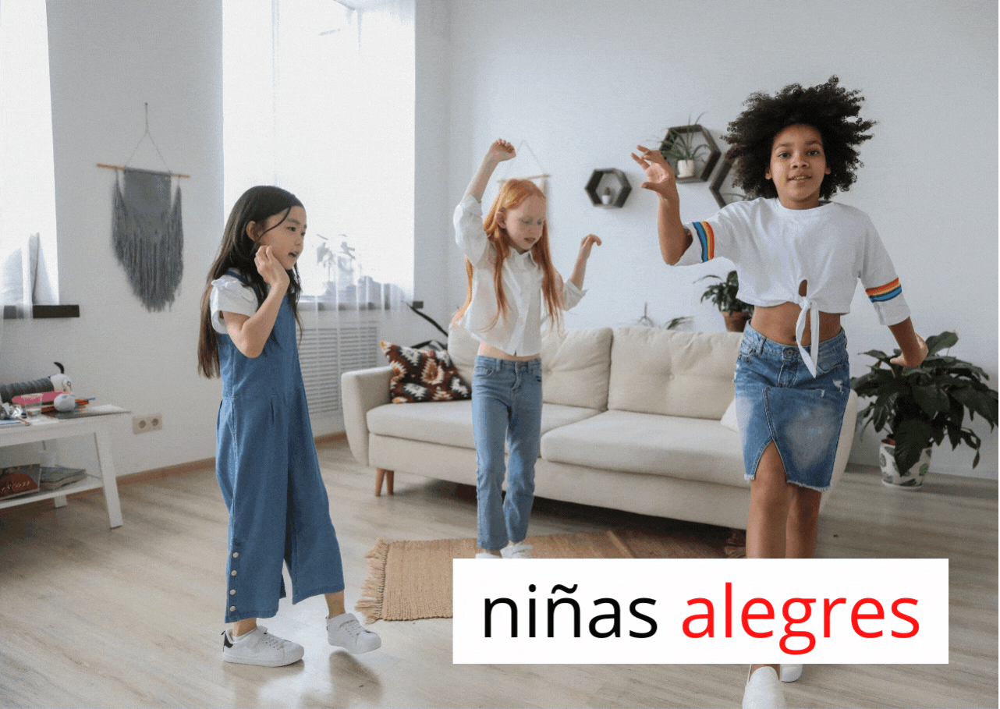
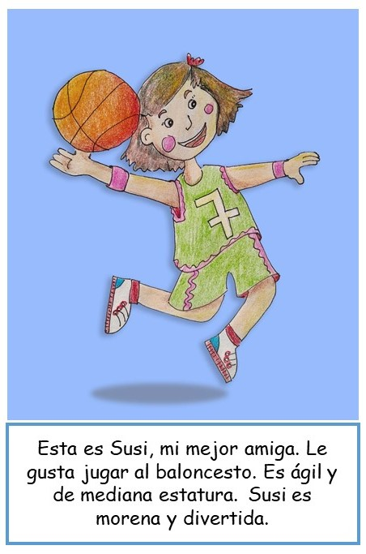
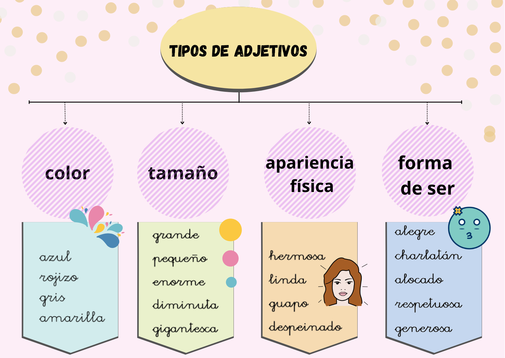
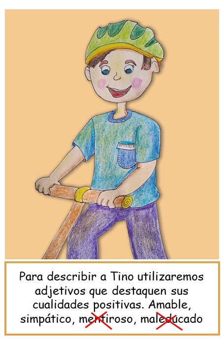
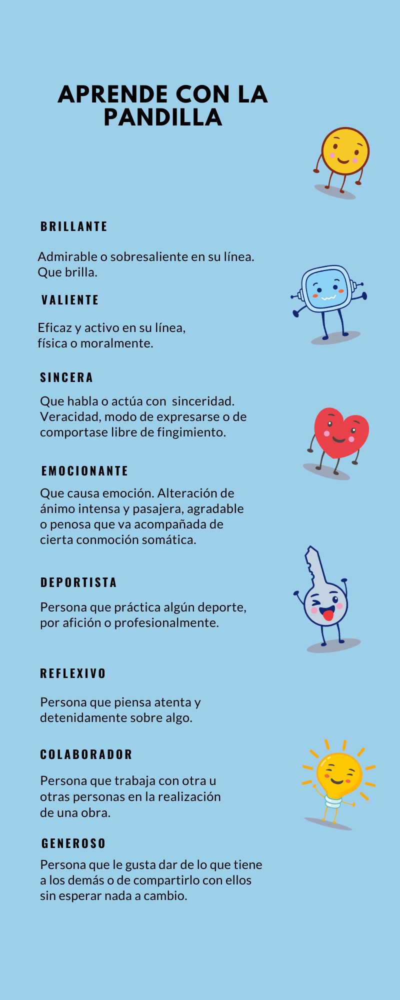

1. Los adjetivos

En el video que pusimos antes vimos a los personajes de la pandilla REA, nos revelaron su nombre secreto y también nos han contado cómo son, sus preferencias y lo que no les gusta. Y tú, ¿cómo eres?
Lectura facilitada
Con las tarjetas aprendemos cosas de la pandilla Rea.
Por ejemplo: su nombre secreto, lo que les gusta, y lo que no les gusta.
¿y tú como eres?
¿Qué son?
Para hablar de nosotros mismos usamos un tipo de palabras que se llaman adjetivos. Con ellos decimos cómo son o cómo están las personas y también los animales, las plantas, las cosas, los lugares...
Los adjetivos suelen escribirse junto a esas palabras a las que se refiere.

Para describir
Cuando realizamos descripciones utilizamos adjetivos para decir las cualidades de las personas que conocemos. Nos fijamos en su aspecto físico y en su forma de ser.

A continuación, podrás encontrar un montón de ejemplos que te pueden servir para realizar descripciones de los compis de la clase, de tu familia y, también, de los personajes de la pandilla.

Adjetivos positivos
Al describir personas tenemos que centrarnos en todo lo positivo de ellas. De ahí que debamos utilizar siempre los adjetivos que resaltan esas buenas cualidades.

Te dejo unos ejemplos.
Aquí tienes un montón de adjetivos que resaltan mis cualidades y las de los amigos y amigas de la pandilla.
